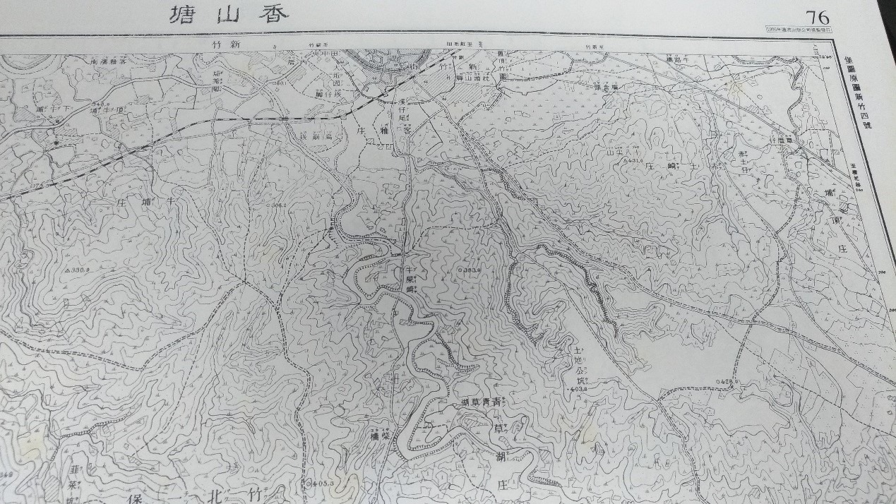

關鍵的戰略地位
「六月初四日（公歷七月二十五日），署台灣府黎景嵩以副將利瓦伊義代楊載雲領新楚軍，抵中港，進扎頭份。初，黎到任後連遣兵攻新竹。傅德升扎十八尖山攻南門，炮力可及新竹城內。楊統領楚軍攻北門，鄭以金攻西門，以及徐驤等苗勇三面環攻。日本大軍未至，城內止千餘兵。黎府有顧盼自雄之意，嘗云新竹攻破，即欲稱為民主，有輕視劉之意。至是劉不自將來彰，以貳尹吳彭年為統領，黎輕之。副統領利瓦伊義職居副將，官階甚高，降為之副，心懷不平。黎府擢為新楚軍統領，將隨帶黑旗兵三百餘名往攻新竹。」 《讓臺記》 「十日凌晨四時，由前哨第二中隊派出將校斥候前往尖筆山，下士斥候前往金山面庄方向偵察。然而，賊徒佔領從十八尖山到烏崩崁庄東方的高地，一方面構築防禦工事，一面以槍炮緩緩向火車站射擊 。」 《攻台戰紀:第三章勘定北台灣》 「十日早晨，傅德生，徐驤等人從十八尖山往新竹及火車站前進，猛然開炮轟擊，雖使皇軍一時受到驚擾，卻沒有乘機攻擊，反而遭到皇軍逆襲而紛然四散，退往水仙嶺及其西方山地，在田蜜庄由姜紹祖指揮的部分兵勇見此情況也與之一起退卻。」 《攻台戰紀:第五章台灣賊徒的對抗行動》 而洪棄生的《瀛海亡偕記》上卷也有關於義軍反攻新竹城的記載： 「丁已(十七日)夜，我軍三路進，傅德星自東門，陳澄波自西門，吳湯興自南門，楊載雲繼後策應，徐驤、姜紹租各從間道先進…載雲出牛埔、會湯興軍，攻南門不入，合德星軍從東南路進。日軍先據城東二、三里之十八尖山，則下山邀截。湯興軍熟山谷路，亟先應戰，載雲、德星左右。進，日軍憑山發槍，我軍先後奮進，爭上奮其山，自山上發抬槍，彈丸及城中。日軍發大炮，我軍伏避，十八尖復為日軍據，我軍或從山後東徑擊其腰，日軍後退山下。一上一下，如是者數次。新竹人從屋上觀，錯愕歎兩軍壯烈....姜紹祖之進也，從山中道越十八尖山至新竹東門。將奪城，城上兵吹號發搶，城下軍驟至，紹祖所部二百餘人衝為兩段，一段奔潰，一部從姜紹祖入枕頭山竹林中黃谷如空廈。日軍追逐前段軍，未遑躡紹祖。枕頭山者，十八尖山下平坡也，距東門一里。紹祖望見十八尖山之戰，則從屋上發槍擊山半敵軍。敵始棄所追，集兵來圍之。紹祖欲出戰，而義民中有膽怯者阻之，相距至夕，槍彈盡，敵軍齊入，紹祖與七十人皆被擒，敵軍不知誰為首，殺二十人，餘囚之，而紹祖自絕死。」
日治時期的地圖，竹塹城位於圖中最北方，十八尖山在其東南。資料來源：《台灣堡圖》（台北：遠流出版社，1996），頁76
六月二十二日晚間，日軍進佔新竹城，知縣王國瑞連夜潛逃。七月九日晚，苗栗義軍分三路進擊新竹城，吳湯興攻南門，陳澄波攻西門，傅德星攻東門，楊載雲在後方接應，徐驤及姜紹組也各領隊伍跟進。吳湯興和傅德星分路合進欲至十八尖山，日軍從虎頭山(十八尖山西峰)出截，楊載雲則從側翼夾攻，日軍不敵敗退；義軍因此佔據十八尖山與虎頭山砲攻新竹城。此後，日軍由前田少佐率步兵及砲兵各二個中隊欲搶回山頭，結果日軍不斷上攻、又不斷被義軍攻下山，如此反覆數回，吳湯興終因日本援軍大增而收軍撤退。
從這段竹苗義軍欲奪回新竹城之戰略攻勢上可以見到，十八尖山是當時義軍重要攻城戰略位置，當時攻擊新竹城不是派全員攻打各個城門，而是有一撥人往竹塹城附近地勢較高的地方---十八尖山攻占，目的在以其居高臨下之地勢作為砲攻新竹城的位址。再從日軍反覆回擊欲重新奪回對十八尖山山頭的控制權，足見十八尖山是攻守軍兩方都不願放棄的且對新竹城成功防守或攻擊之一具決定性之戰略位置。
民生時期
進入民生時期後，日治時期(大正五年)政府發起都市改正計畫，由圖中可以看出當時18尖山周圍的開發十分落後，建築物只有零星幾棟(藍框框處) ，與現在周圍的水泥叢林對比強烈。
(古地圖: 台灣都市發展地圖集)
(現代地圖)
都市改正計畫時將十八尖山規劃為新竹公園，由於清領時期十八尖山曾是公墓，也有許多的亂葬崗，因此在翻修過程中挖開了許多墳墓，民眾基於對墓地的敬畏心理，因此修建了萬靈塔以及石觀音等建築用來安慰幽魂。
(日治時期已將十八尖山規劃為公園)


石觀音(左)墳墓圖(右)